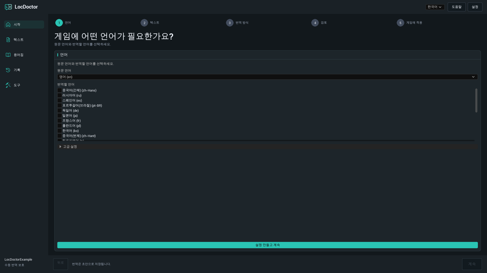
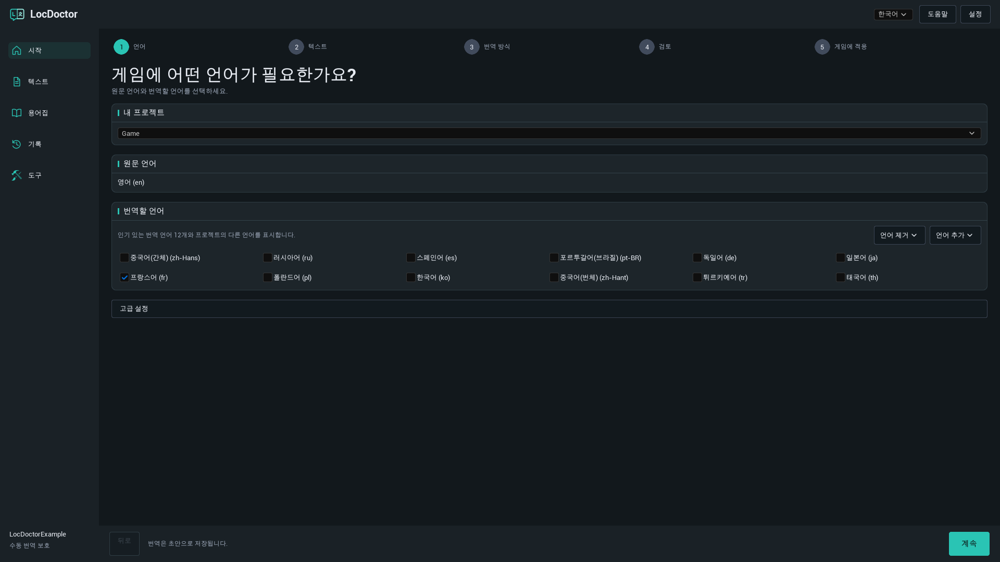
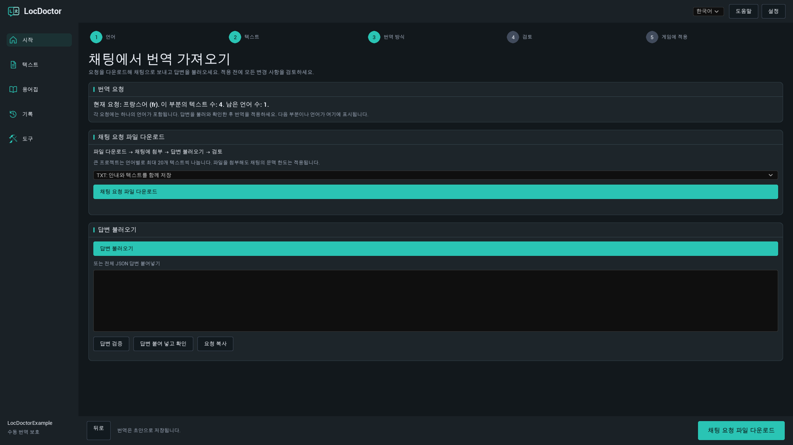
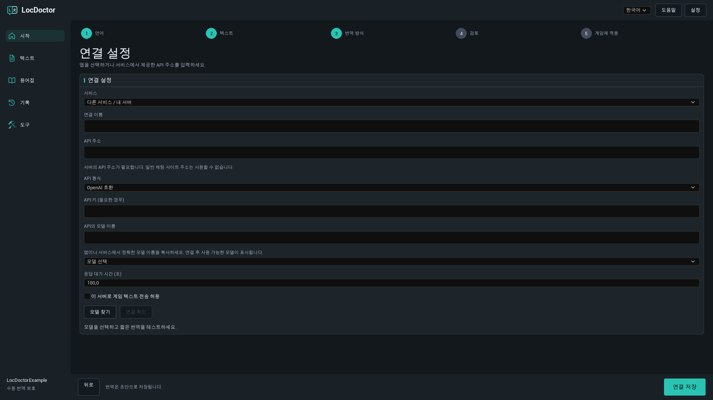
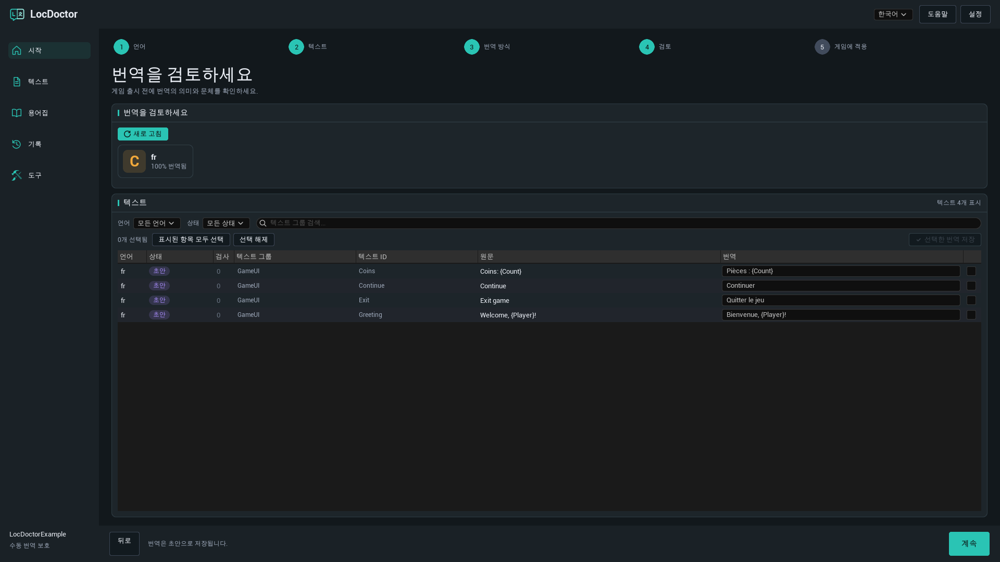
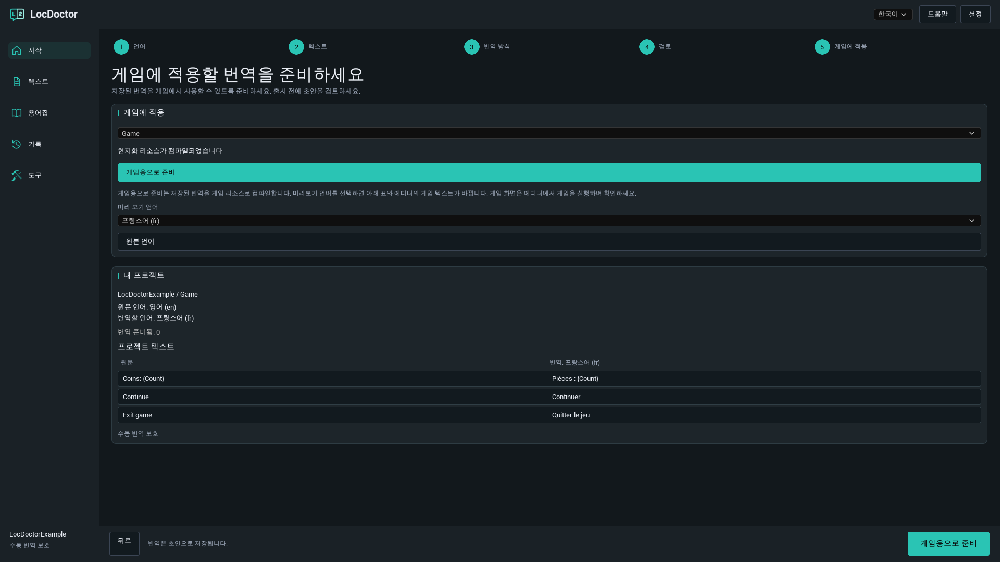

LOCDOCTOR 1.0.0 사용 가이드
게임을 번역하세요.
모든 문구를 직접 확인하고 다듬으세요.
로컬 모델, 자신의 AI 채팅 또는 API 서비스를 이용해 Unreal Engine 게임 텍스트를 번역하세요. 에디터에서 결과를 검토한 다음 게임에서 사용할 리소스를 준비합니다.
이미 사용 중인 환경에 맞는 방법을 선택하세요
시작하기
설치
LocDoctor 1.0.0은 64비트 Windows에서 Unreal Engine 5.7과 5.8을 지원합니다. 사용하는 엔진 버전에 맞는 패키지를 설치하세요.
Fab에서 설치하기
Epic Games Launcher의 Fab 라이브러리에서 사용하는 엔진 버전에 맞는 플러그인을 설치하세요. 프로젝트를 열고 필요하면 Edit > Plugins에서 LocDoctor를 활성화한 다음 에디터를 다시 시작합니다.
ZIP 파일로 설치하기
- Unreal Editor를 종료합니다.
- 압축을 풀어
LocDoctor.uplugin파일이<YourProject>/Plugins/LocDoctor/폴더 바로 안에 있도록 하세요. ZIP 안에 이미LocDoctor폴더가 있다면 그 폴더를Plugins안에 넣습니다. - 프로젝트를 엽니다. 필요하면 Edit > Plugins에서 LocDoctor를 활성화한 다음 에디터를 다시 시작합니다.
- Tools > LocDoctor를 엽니다.
YourProject/
YourProject.uproject
Plugins/
LocDoctor/
LocDoctor.uplugin
Resources/
Source/컴파일된 파일이 포함된 패키지에는 Binaries 폴더도 있습니다. 소스 코드만 포함된 패키지를 사용하면 에디터 모듈을 빌드할 수 있도록 Unreal과 호환되는 C++ 빌드 도구가 필요합니다.
시작하기
첫 번역 시작하기
처음에는 한 언어와 소량의 게임 텍스트로 시작하세요. 플러그인 버튼 이름은 이 가이드의 언어에 맞춰 표시합니다. Unreal Editor 자체의 메뉴 이름은 영어로 표기합니다.
- 언어를 선택합니다. Tools > LocDoctor를 엽니다. 게임 원문이 작성된 언어와 하나 이상의 번역 언어를 선택하세요. 처음 사용하는 경우 설정 만들고 계속를 클릭합니다. 프로젝트에 다른 에셋 폴더나 로컬라이제이션 대상이 필요한 경우가 아니라면 고급 설정은 기본값을 유지하세요.
- 텍스트를 수집합니다. 텍스트 단계에서 텍스트 수집를 클릭하세요. Unreal에서 저장을 요청하면 변경된 게임 에셋을 저장합니다. 프로젝트 요약에 원하는 텍스트가 표시되는지 확인하세요.
- 번역 방법을 선택합니다. 내 컴퓨터에서, 내 채팅에서, API로 중 하나를 선택합니다. 자동 번역 방법을 사용하는 경우 모델을 선택하고 연결 확인을 클릭하세요. 짧은 샘플을 번역해 연결을 확인합니다. 성공하면 기본 버튼이 텍스트 번역으로 바뀝니다.
- 결과를 검토합니다. AI 번역은 초안으로 저장됩니다. 검토 단계에서 각 번역을 확인하고 필요하면 수정한 다음 선택한 번역을 저장하세요.
- 게임에 적용할 리소스를 준비합니다. 게임에 적용에서 게임용으로 준비를 클릭하세요. 각 언어로 게임을 테스트하고 해당 언어를 패키징 설정에 포함합니다.

언어와 게임 텍스트
원문 언어, 번역 언어, 인터페이스 언어
- 원문 언어: 게임 원문이 작성된 언어입니다.
- 번역할 언어: 현재 번역 작업에서 처리할 언어입니다. 체크를 해제하면 해당 언어가 이번 작업에서 제외됩니다.
- 인터페이스 언어: LocDoctor 상단의 언어 선택 메뉴입니다. 플러그인 인터페이스의 언어만 변경하며 기본값은 영어입니다.
로컬라이제이션 대상은 특정 텍스트 묶음을 관리하는 Unreal의 현지화 설정입니다. 보통 이름은 Game입니다. 프로젝트에 대상이 여러 개 있다면 번역할 대상을 선택하세요.
언어 추가와 삭제

먼저 자주 사용하는 번역 언어 12개를 제안합니다. 언어 추가을 클릭하면 이름이나 Unreal 문화 코드로 다른 언어를 찾을 수 있습니다. 언어 제거를 클릭하면 로컬라이제이션 대상의 설정에서 해당 언어가 제거됩니다. 저장된 번역 파일은 유지되므로 나중에 언어를 다시 추가할 수 있습니다.
어떤 텍스트를 번역할 수 있나요?
LocDoctor는 Unreal의 로컬라이제이션 시스템으로 수집한 현지화 가능한 FText와 String Tables를 처리합니다. 일반 FString 값이나 문화권 불변으로 지정한 텍스트는 자동으로 현지화되지 않습니다. 도구 > 프로젝트 검사에서 이러한 문제를 확인하세요.
번역 방법
내 컴퓨터에서
컴퓨터에서 실행 중인 앱을 통해 다운로드한 텍스트 모델을 사용합니다. LocDoctor는 앱의 API 서버에 연결하며 앱을 설치하거나 모델을 다운로드하지 않습니다.
- 원하는 모델 실행 앱을 설치하세요. 컴퓨터 메모리에 맞고 번역할 언어를 지원하는 텍스트 생성 모델을 다운로드합니다.
- 앱을 실행하고 로컬 API 서버를 켜세요. 번역하는 동안 앱과 서버를 계속 실행해 두어야 합니다.
- LocDoctor에서 내 컴퓨터에서를 선택한 다음 모델 선택을 클릭합니다. 모델 찾기를 클릭하면 목록을 새로 가져옵니다.
- 모델을 선택합니다. 테스트가 자동으로 시작되지 않았다면 연결 확인을 클릭하고 짧은 샘플 번역이 끝날 때까지 기다리세요.
- 연결이 준비되면 텍스트 번역을 클릭합니다.
로컬 앱 설정하기
| 앱 | 실행할 항목 | 기본 API 주소 |
|---|---|---|
| Ollama | 로컬 텍스트 모델을 다운로드한 뒤 Ollama를 실행합니다. 로컬 서버는 보통 앱과 함께 시작됩니다. | http://127.0.0.1:11434 |
| LM Studio | Developer에서 API 서버를 시작합니다. 서버에서 텍스트 모델을 사용할 수 있도록 설정하세요. | http://127.0.0.1:1234/v1 |
| Jan | Settings > Local API Server에서 서버를 시작합니다. 키가 필요한 경우 같은 키를 LocDoctor에도 입력하세요. | http://127.0.0.1:1337/v1LocDoctor는 6767 포트도 확인합니다. |
| GPT4All | Settings > Application > Advanced에서 Local API Server를 활성화하고 텍스트 모델을 로드합니다. | http://127.0.0.1:4891/v1 |
포트를 변경했다면 앱에 표시된 주소를 사용하세요. LocDoctor는 로컬 서버에서 모델 목록을 가져오고 저장된 로컬 연결도 확인합니다. 디스크를 검색하지 않으며 설치 폴더를 지정할 필요도 없습니다.
공식 설정 가이드: OllamaLM StudioJanGPT4All
다른 앱 또는 사용자 지정 포트
연결 설정에서 다른 앱 또는 다른 서비스 / 내 서버를 선택하세요. API 주소를 입력하고 API 형식을 Ollama 또는 OpenAI 호환으로 선택한 다음 정확한 모델 이름을 입력합니다. llama.cpp, LocalAI, vLLM 같은 서버도 해당 엔드포인트가 선택한 형식을 지원하면 연결할 수 있습니다.
번역 방법
내 채팅에서
텍스트 붙여넣기나 파일 첨부를 지원하는 AI 채팅을 사용하세요. 직접 요청을 보내고 응답을 LocDoctor로 가져오는 방식이며 API 키가 필요하지 않습니다.
- 내 채팅에서를 선택합니다. 현재 요청 또는 첫 번째 요청 표시를 확인하면 현재 처리할 언어와 구간을 알 수 있습니다.
- 채팅 요청 파일 다운로드를 클릭합니다. 처음에는 TXT: 안내와 텍스트를 함께 저장를 선택하세요.
- AI 채팅에 파일을 첨부하고 파일에 포함된 지침에 따라 요청된 번역 응답 전체를 반환해 달라고 하세요.
- 답변 불러오기으로 응답 파일을 가져옵니다. 또는 응답 입력란에 JSON 응답 전체를 붙여넣고 답변 검증을 클릭하거나 답변 붙여 넣고 확인을 사용하세요.
- 미리보기 내용을 확인합니다. 모든 검사를 통과하면 번역 적용을 클릭하세요. 번역은 초안으로 저장됩니다.
- 다음 요청을 다운로드하거나 복사한 뒤 남은 요청이 없을 때까지 같은 작업을 반복합니다. 마지막으로 번역을 검토하세요.
어떤 파일 형식을 사용하면 되나요?

| 형식 | 적합한 용도 | 첨부할 파일 |
|---|---|---|
| TXT | 처음 사용하기 가장 간단한 방법입니다. | 지침과 텍스트가 함께 들어 있는 파일 하나. |
| JSON | 구조화된 데이터를 잘 처리하는 채팅이나 도구. | 지침이 포함된 JSON 요청 파일. |
| CSV | 내용을 확인하거나 공유할 표. | CSV 파일과 별도의 지침 파일. |
응답 파일은 JSON, JSON 응답 전체를 담은 TXT, 또는 batch, culture, i, t 열이 있는 CSV 형식을 사용할 수 있습니다. 채팅에서 첨부 파일을 지원하지 않으면 요청 복사을 사용하세요. 파일로 보내더라도 채팅의 컨텍스트 한도와 업로드 제한은 적용됩니다.
응답 검사에서는 무엇을 확인하나요?
LocDoctor는 요청 식별자, 언어, 텍스트 식별자, 서식 자리표시자를 확인합니다. 요청한 항목이 각각 정확히 한 번씩 있어야 하며 게임 텍스트와 용어집이 내보낸 요청을 만들 때의 내용과 일치해야 합니다.
내보낸 뒤 원문, 번역 또는 용어집을 수정했다면 새 요청을 준비하세요. 응답이 불완전하거나 자리표시자가 변경되었다면 채팅에 수정을 요청합니다. 현재 요청은 프로젝트에 로컬로 저장되므로 에디터를 다시 열어도 작업을 이어갈 수 있습니다.
번역 방법
API로
LocDoctor는 설정한 서비스로 번역 요청을 자동 전송합니다. 서비스의 계정 관리 화면에서 API 키를 만들고 시작 전에 사용할 모델의 제공 여부와 요금 조건을 확인하세요.
- API로를 선택하고 OpenRouter, OpenAI, Google Gemini, Groq 같은 서비스의 기본 설정을 선택합니다.
- 고급 설정을 열고 API 키 (필요한 경우)를 입력합니다. 사용자 지정 서비스는 다른 서비스 / 내 서버를 선택한 뒤 서비스 문서에 명시된 API 주소와 형식을 입력하세요.
- 모델 찾기를 클릭하고 모델을 선택합니다. 서비스에서 모델 목록을 제공하지 않으면 정확한 API의 모델 이름을 직접 입력하세요.
- 이 컴퓨터 외부의 서버를 사용하려면 이 서버로 게임 텍스트 전송 허용를 켜세요.
- 연결 확인을 클릭하고 짧은 샘플 번역이 끝날 때까지 기다립니다. 성공하면 텍스트 번역을 클릭하세요.
사용자 지정 서비스 연결

| 항목 | 입력할 내용 |
|---|---|
| 연결 이름 | ‘팀 번역 서버’처럼 알아보기 쉬운 이름. |
| API 주소 | 서비스 문서에 명시된 API 기본 주소. 예: https://openrouter.ai/api/v1. 일반 채팅 사이트 주소는 사용할 수 없습니다. |
| API 형식 | 호환되는 Chat Completions 엔드포인트는 OpenAI 호환 형식, Ollama 엔드포인트는 Ollama 형식을 선택합니다. 지원하지 않는 API 형식에는 별도의 연동 구현이 필요합니다. |
| API 키 | 서비스나 서버에서 요구하는 경우 발급받은 키. |
| API의 모델 이름 | 서버에서 요구하는 정확한 식별자. 웹사이트에 표시되는 모델 이름과 다를 수 있습니다. |
| 응답 대기 시간 (초) | 1~600 사이의 값. 모델이나 서버 응답이 느리면 늘리세요. |
API 키는 프로젝트의 Saved/Config 폴더에 있는 로컬 사용자 설정에 저장됩니다. 이 설정은 암호화되지 않습니다. LocDoctor의 채팅 요청 파일, 번역 이력, 보고서에는 키가 포함되지 않습니다.
검토와 출시 준비
번역 검토
AI 번역은 초안 상태로 시작합니다. 자동 검사가 서식 유지에 도움을 주지만 의미, 말투, 문맥은 직접 검토해야 합니다.
- 검토 단계 또는 텍스트 페이지를 엽니다. 필요하면 새로 고침을 클릭하세요.
- 언어와 상태 필터로 목록을 좁힐 수 있습니다. 단계별 검토 화면에는 선택한 번역 언어가 표시됩니다.
- 원문과 번역을 비교하고 수정이 필요한 경우 번역 입력란을 편집합니다. 이름, 용어, 자리표시자, 줄바꿈, 보고된 문제를 확인하세요.
- 저장할 행을 선택하고 선택한 번역 저장를 클릭합니다.
- 출시 전에 게임에서 번역된 화면을 확인하세요.
| 상태 | 의미 |
|---|---|
| 미번역 | 이 텍스트와 언어에 대해 저장된 번역이 없습니다. |
| 초안 | AI 번역이 저장되었으며 검토가 필요합니다. |
| 검토 완료 | 검토를 완료한 것으로 표시된 번역입니다. |
| 수동 번역 | 사람이 작성한 번역은 일반적인 자동 번역 작업에서 덮어쓰지 않도록 보호됩니다. |
| 오래된 번역 | 번역 이후 원문이 변경되었습니다. 현재 원문과 비교해서 검토하세요. |
진행률 숫자 이해하기

진행률은 텍스트와 언어의 조합을 기준으로 계산합니다. 원문 하나를 네 언어로 번역하면 번역 작업은 네 개입니다. 처리됨에는 처리한 작업 수가 표시됩니다. 저장된 결과와 오류 내용을 확인해서 실제로 성공한 번역을 확인하세요.
자동 번역을 중지해도 완료된 작업은 유지됩니다. 저장된 작업이 남아 있으면 미완료 작업을 이어갈 수 있습니다. 일반적인 자동 번역 작업에서는 기존의 수동 번역이 보호됩니다.
서식 자리표시자
{Player}, {Count} 같은 변수, Rich Text 태그, 줄바꿈을 그대로 유지하세요. 채팅 요청에서는 서식을 ⟦LD0⟧ 같은 보호 토큰으로 바꿀 수 있으며 모델은 토큰을 정확히 복사해야 합니다. LocDoctor는 유효한 응답을 적용할 때 원래 서식을 복원합니다.
복잡한 복수형이나 성별 표현은 직접 검토해야 합니다. 표현식의 구조를 바꾸지 않고 각 분기 안의 텍스트만 번역하세요.
용어집과 이력
용어를 일관되게 사용하기
- 용어집을 열고 추가를 클릭합니다.
- 용어를 입력합니다. 그대로 유지할 이름에는 번역하지 않음를 선택하고 정확한 번역을 지정하려면 지정 번역을 선택하세요.
- 필요한 언어별 번역을 설정하고 필요하면 대소문자 구분 여부를 지정합니다.
- 새 요청을 준비하기 전에 저장을 클릭하세요.
예를 들어 캐릭터 이름을 유지하거나 게임 용어의 번역을 언어별로 지정할 수 있습니다. 용어집은 새 번역 요청에 포함됩니다. 용어집을 수정하면 이미 내보낸 채팅 요청이 더 이상 유효하지 않을 수 있습니다.
이전 변경 내용 복원하기
기록을 열고 대상, 언어, 시간으로 저장된 배치를 찾은 뒤 복원을 클릭합니다. LocDoctor는 이전 데이터를 복원하기 전에 더 최근의 수정 내용이 있는지 확인합니다. 충돌이 있다면 내용을 검토한 뒤 복원을 다시 시도하세요.
저장이 중단되었다면 다음에 열 때 중단된 변경 사항 복원가 표시될 수 있습니다. 복원을 사용해 저장해 둔 원래 데이터를 복구한 다음 작업을 계속하세요.
검토와 출시 준비
게임용으로 준비
이 단계에서는 저장한 번역을 Unreal의 로컬라이제이션 리소스로 컴파일합니다. 배포한 게임은 이 리소스를 사용하며 LocDoctor의 에디터 인터페이스는 게임 안에서 실행되지 않습니다.
- 배포할 번역의 검토를 마칩니다.
- 게임에 적용을 열고 로컬라이제이션 대상을 선택한 뒤 게임용으로 준비를 클릭합니다. 현지화 리소스가 컴파일되었습니다가 표시될 때까지 기다리세요.
- 미리 보기 언어를 선택합니다. 프로젝트 텍스트 예시와 에디터의 현지화된 게임 텍스트가 갱신됩니다. 에디터에서 게임을 실행해 화면을 확인하세요.
- 원본 언어를 클릭하면 미리보기가 종료됩니다.
- Project Settings > Packaging > Localizations to Package에서 배포할 모든 언어를 포함합니다. 프로젝트의 국제화 설정이 해당 언어를 지원하는지 확인한 다음 패키징한 빌드를 테스트하세요.
새 번역을 저장한 뒤에는 다시 컴파일하세요. 에디터에서는 표시되지만 패키징한 빌드에서는 표시되지 않는 언어가 있다면 빌드에 해당 언어의 로컬라이제이션 리소스와 문화권 데이터가 포함되었는지 확인합니다.

문자가 네모로 표시되거나 보이지 않으면 도구 > 글꼴에서 해당 언어의 게임 글꼴 에셋과 대체 글꼴을 확인하세요.
도구와 파일 교환
프로젝트 검사
도구 > 프로젝트 검사에서 검사를 실행하세요. 하드코딩된 문자열, 문화권 불변 텍스트, 키 충돌, 여러 조각을 조합한 문구처럼 현지화를 방해할 수 있는 패턴의 위치를 확인합니다. 첫 검사에서는 Unreal이 에셋을 로드하므로 시간이 더 걸릴 수 있습니다.
글꼴
도구 > 글꼴에서 선택한 게임 글꼴에 번역문에서 사용하는 문자가 포함되어 있는지 확인합니다. 누락된 문자와 완료되지 않은 검사를 살펴본 다음 실제 게임 화면에서 결과를 확인하세요.
번역가와 작업하기
도구 > 가져오기 및 내보내기에서 CSV 또는 PO 파일로 번역을 교환할 수 있습니다.
- 선택한 대상과 언어를 필요한 형식으로 내보냅니다.
- 번역가에게 텍스트 식별자, 원문 값, 자리표시자는 유지하고 번역 값만 수정하도록 안내하세요.
- 돌려받은 파일을 가져오고 제안된 변경 내용을 검토합니다.
- 프로젝트 번역 유지 또는 파일 번역 사용을 선택해 충돌을 해결한 다음 가져온 번역 저장를 클릭하세요.
채팅 요청 CSV와 번역가용 교환 CSV는 서로 다른 작업 방식입니다. 채팅 응답은 내 채팅에서 > 답변 불러오기으로 가져오세요. 이 버전에서는 XLSX 스프레드시트와 XLIFF를 지원하지 않습니다.
문제 해결
Tools 메뉴에 LocDoctor가 없습니다
Edit > Plugins에서 LocDoctor를 검색해 활성화하고 에디터를 다시 시작하세요. 플러그인 목록에도 없다면 설치 폴더와 엔진 버전에 맞는 패키지를 사용했는지 확인합니다. 소스 코드만 포함된 패키지는 Unreal과 호환되는 C++ 빌드 도구를 설치하고 에디터 대상을 빌드해야 합니다.
수집된 텍스트가 없습니다
게임 에셋을 저장하고 로컬라이제이션 대상의 수집 폴더를 확인한 뒤 다시 수집하세요. 텍스트는 현지화 가능한 FText 또는 String Tables를 사용하고 Unreal의 수집 설정에 포함되어야 합니다. 도구 > 프로젝트 검사에서 하드코딩된 문자열과 현지화할 수 없는 텍스트를 확인합니다.
텍스트 번역 버튼을 사용할 수 없습니다
번역 언어를 하나 이상 선택하고 텍스트를 수집하세요. 자동 번역은 모델을 선택하고 먼저 연결 확인을 완료해야 합니다. 번역할 텍스트가 없다면 텍스트에서 기존 번역을 수정하거나 새 텍스트를 수집하고 다른 언어를 선택하세요.
로컬 모델 목록이 비어 있습니다
모델 실행 앱을 열어 두고 로컬 API 서버를 활성화한 다음 텍스트 생성 모델을 설치하거나 로드하세요. API 주소와 포트를 확인합니다. 사용자 지정 서버는 고급 설정에 정확한 모델 이름을 입력하세요. 앱이 설치되어 있어도 API 서버가 실행 중인 것은 아닙니다.
연결 확인 중 시간이 초과됩니다
로컬 모델이 로드될 때까지 기다리거나 GPU 메모리를 사용하는 다른 앱을 종료하거나 더 작은 모델을 사용하세요. 연결 설정의 응답 대기 시간 (초)를 늘릴 수도 있습니다. 서버에서 전혀 응답하지 않으면 주소, 포트, 시스템 프록시가 localhost 요청을 다른 곳으로 보내는지 확인합니다.
API에서 401 또는 403 오류가 반환됩니다
키가 선택한 서비스에서 발급된 것이고 아직 유효하며 해당 모델을 사용할 권한이 있는지 확인하세요. 인증을 사용하는 로컬 서버라면 앱의 API 서버 설정에 있는 키를 사용합니다.
API에서 429 또는 모델 오류가 반환됩니다
잠시 기다렸다가 다시 시도하거나 다른 사용 가능한 모델을 선택하세요. 서비스의 계정 제한과 모델 제공 여부를 확인합니다. 모델 목록을 가져오는 데 성공해도 해당 서비스에서 번역을 생성할 수 있다는 보장은 없습니다.
채팅 요청에 선택한 언어 중 하나만 있습니다
정상 동작입니다. 각 요청에는 한 언어와 최대 20개의 텍스트가 포함됩니다. 응답을 가져와 검사하고 적용한 다음 새 요청을 준비하세요. 파일 작업 버튼 위에 현재 또는 다음 언어가 표시됩니다.
채팅 응답이 거부되었습니다
현재 요청에 대한 응답 전체를 사용하세요. 채팅에 모든 요청 항목을 정확히 한 번씩 반환하고 배치 값과 문화 코드, 모든 자리표시자를 그대로 유지하도록 요청합니다. 내보낸 뒤 프로젝트 텍스트나 용어집을 수정했다면 새 요청을 만드세요.
미리보기 언어를 변경해도 게임이 바뀌지 않습니다
번역을 저장하고 먼저 게임용으로 준비를 클릭하세요. 선택한 대상에 해당 미리보기 언어의 번역이 있는지 확인합니다. 미리보기는 Unreal Editor 메뉴가 아닌 현지화된 게임 텍스트에 적용됩니다. 하드코딩된 문자열과 수집되지 않은 텍스트는 바뀌지 않습니다.
패키징한 게임에 특정 언어가 없습니다
최신 번역을 컴파일하세요. Project Settings > Packaging > Localizations to Package에 해당 언어를 포함하고 문화권 데이터가 포함된 국제화 설정을 사용합니다. 새로 패키징한 빌드를 테스트하세요.
번역된 문자가 네모로 표시됩니다
해당 언어를 지원하는 게임 글꼴과 대체 글꼴을 확인하세요. 도구 > 글꼴에서 문자 지원 범위를 확인한 다음 실제 위젯과 게임 화면을 테스트합니다.
자주 묻는 질문
유료 AI 구독이 필요한가요?
LocDoctor에는 AI 구독이 포함되어 있지 않습니다. 로컬 모델, 자신의 채팅 이용 권한 또는 서비스의 API 이용 권한을 사용하세요. 제공 여부, 사용량 제한, 요금은 선택한 앱이나 서비스에 따라 다릅니다.
인터넷 없이 로컬 번역을 할 수 있나요?
다운로드한 모델이 컴퓨터에서 실행된다면 가능합니다. 앱과 모델을 처음 다운로드할 때는 인터넷이 필요할 수 있습니다. 앱이 컴퓨터에서 실행되더라도 클라우드 모델을 선택하면 해당 서비스에 연결합니다.
이미지, 음성, 영상 자막도 번역하나요?
Unreal에서 수집한 현지화 가능한 게임 텍스트를 번역합니다. 이미지 속 글자, 음성, 영상 자막은 각각 원문 준비와 콘텐츠 제작 작업이 필요합니다.
언어를 삭제하면 번역도 삭제되나요?
아니요. 언어 제거는 로컬라이제이션 대상의 언어 설정에서 해당 언어를 제거하지만 저장된 번역 파일은 유지합니다. 체크를 해제하면 현재 번역 작업에서만 제외됩니다.
어떤 인터페이스 언어를 지원하나요?
영어, 러시아어, 독일어, 프랑스어, 스페인어, 포르투갈어(브라질), 중국어(간체), 일본어, 한국어를 지원합니다. 게임을 번역할 언어는 별도로 설정합니다.
배포한 게임에 LocDoctor나 AI 연결이 필요한가요?
플러그인은 Unreal Editor에서 사용합니다. 완성된 게임은 Unreal에서 컴파일한 로컬라이제이션 리소스를 사용하므로 플레이할 때 번역 모델이나 서비스가 필요하지 않습니다.
버전과 지원
이 가이드는 64비트 Windows용 Unreal Engine 5.7과 5.8에서 사용하는 LocDoctor 1.0.0을 설명합니다.
1.0.0
로컬 모델, 브라우저 채팅 파일, 호환 API를 통해 게임 텍스트를 번역합니다. 언어 설정, 초안 검토, 용어집, 이력, 로컬라이제이션 컴파일, 프로젝트 검사, 글꼴 검사, CSV / PO 파일 교환 기능을 포함합니다.
문제를 보고할 때
지원 문의: nexusforgeuesupport@gmail.com.
Unreal Engine 버전, LocDoctor 버전, 번역 방법, 정확한 오류 메시지를 알려 주세요. 연결 문제라면 앱이나 서비스 이름과 모델 이름도 포함하세요. 현재 단계를 보여 주는 원본 크기의 스크린샷이 있으면 도움이 됩니다.
스크린샷이나 로그를 공유하기 전에 API 키와 기타 개인정보를 제거하세요.